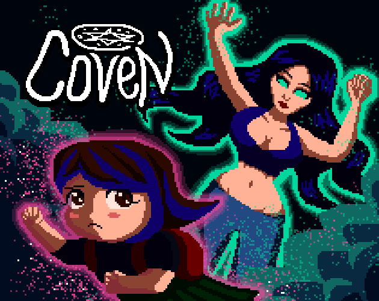

Diego Sebastián Jaime Velásquez Figueroa
Desarrollador de videojuegos | Licenciado en Ciencia de la Computación
Soy un profesional de las ciencias de la computación apasionado por el desarrollo de videojuegos. Me interesa crear experiencias interactivas que desafíen a los jugadores, despierten emociones y permanezcan en su memoria mucho después de haber terminado de jugar.
«Crear experiencias que se juegan, se sienten y se recuerdan.»
Proyecto destacado

Espacio para la portada o una captura de Coven
Guarda la imagen como assets/images/coven-cover.png
Coven
Videojuego desarrollado para una Game Jam.
Jugar Coven(se abre en una pestaña nueva)https://chichodel95.itch.io/coven
Contacto profesional
Conectemos en LinkedIn(se abre en una pestaña nueva)
https://www.linkedin.com/in/diegosjv/
Inventario
Espacios reservados para nuevos enlaces.
- GitHubEspacio libre
- PortafolioEspacio libre
- CorreoEspacio libre